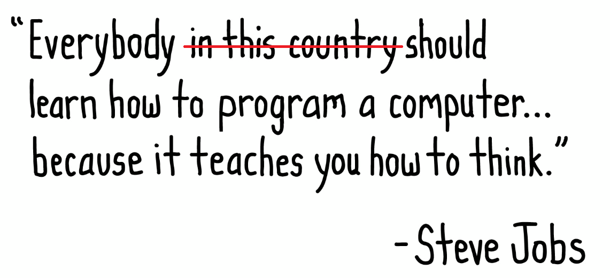

Introduction to C++
SDSLabs
What this lecture is all about?
A very basic primer of computer programming
using C++ language
Why should you learn programming ?
Why should you learn programming ?
Programming is Automation
Programming teaches you how to break problems
It’s a way to create change
Programming is fun
Why C++ ?
Powerful and fast
It will provide you a better understanding of other systems
** You will hardly be seen as a hacker if you don’t know C++ **
Getting your machines ready
Various IDEs are available for programmming in C++
- CodeBlocks (easy to use, free, cross platform)
- Eclipse CDT (great but a bit advanced for beginners)
- DevC++ (windows only)
- and many more . . .
variables
Store values.
data type variable = value;
int x = 34;
Basic datatypes
- char : -128 to 127, 1 byte
- short : -32768 to 32767, 2 bytes
- int : -2147483648 to 2147483647, 4 bytes
- float : +/- 3.4x10(+/- 38), 4 bytes
- double : +/- 1.7x10(+/- 308), 8 bytes
- bool :true or false, 1 byte
Nothing to be remembered here, just a bit show-off
Naming Conventions
- Must start with an alphabet or underscore "_"
- May only be comprised of alpha-numeric characters and underscores. a-z, A-Z, 0-9, or _
- Cannot use reserved words (keywords), like 'int', 'while' etc as identifiers.
Operators
- Assignment Operators
- Arithmetic Operators
- Comparison Operators
Assignment Operator
=
int a = 5;
char b = 'h';
Arithmetic Operator
- Addition: +
- Subtraction: -
- Division: /
- Multiplication: *
- Modulus: %
Comparison Operator
- Equal To: ==
- Not Equal To: !=
- Less Than: <
- Greater Than: >
- Less Than or Equal To: <=
- Greater Than or Equal To: >=
The Console
outputting and inputting values
using cout and cin
#include<iostream>
Cout
prints values to console
cout << "Hello";
int x = 5;
cout << "Hello, x = " << x;
Cin
takes user value from console and saves it to a variable
int number;
cin >> number;
int twice_of_number = number * 2;
cout << twice_of_number;
System Pause
Pauses the console until a key is presed
cout << "Sample Output";
system("pause");
Special case for devcpp
Conditional statements
if, if-else & switch
if
int marks = 100;
if (marks==100)
cout << "Congrats !! Chapo.";
if-else
int marks = 88;
if (marks==100)
cout << "Congrats !! Chapo.";
else
cout << ":|";
switch
switch (x) {
case 1:
cout << "x is 1";
break;
case 2:
cout << "x is 2";
break;
default:
cout << "value of x unknown";
}
arrays
Lots of values in one parent variable
Remember indexed values ?? Maths

the elements collectively are called an 'array' of elements

creating arrays
data type array[length]
int arr[3];
arr[0] = 34;
arr[1] = 54;
arr[2] = 13;
int arr[3] = {34, 54, 13};
accessing array members
array[index]
char y = 'c';
char array[4] = {'a', 'b', 'f', 'd'};
array[2] = y; // now array is {'a', 'b', 'c', 'd'}
loops
For, While, Do While
For Loop
for (initialize; conditional statement; update){
do this code;
}
int years[4] = {2002, 2007, 2010, 2013};
for (int i = 0; i < 4; i++){
cout << years[i] << "\n";
}
While Loop
while (conditional statement is true) {
//do this code;
}
int years[4] = {2002, 2007, 2010, 2013};
int i = 0;
while(i<4){
cout << years[i] << "\n";
i += 1;
}
Do While
int years[4] = {2002, 2007, 2010, 2013};
int i = 0;
do{
cout << years[i] << "\n";
i += 1;
}
while(i < 4);
The Program structure
/*
C++ Program
Author SDSLabs
*/
#include<iostream>
//include the header files you need here
using namespace std;
int main() // it all begins from here
{
//your code here
return 0;
}